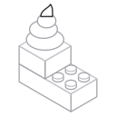
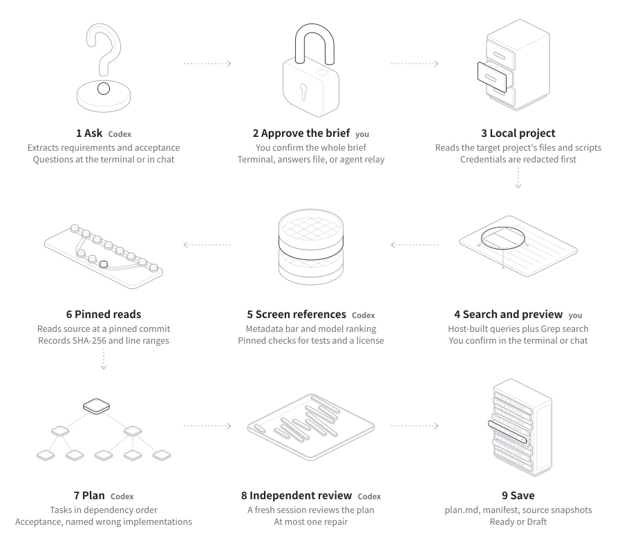
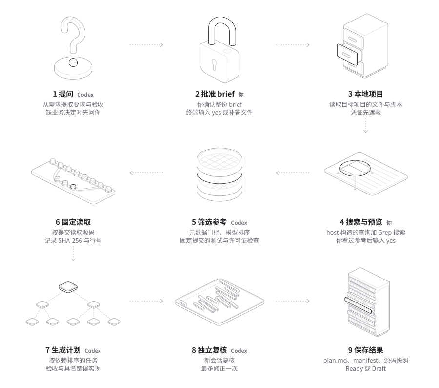

Implementation plans built on code that already works.让实施计划建立在已经可用的代码上。
unshit turns a plain-language software requirement into an implementation plan. It finds mature, tested, maintained public repositories, reads their source at pinned commits, and cites the files and lines behind every important decision. It writes a plan; it does not write the application.
unshit 把一句开发需求变成实施计划：找到成熟、有测试、持续维护的公开仓库，在固定提交读取它们的源码，并为每个重要决定标出依据的文件和行号。它只写计划，不写应用本身。
git clone https://github.com/0xroylee/unshit.git && cd unshit && ./install.sh
Needs git, Bun 1.3 or later, and a Codex CLI login (codex login). The installer also adds the unshit skill to Claude Code and Codex.
需要 git、Bun 1.3 或更新版本，以及已登录的 Codex CLI（codex login）。安装时也会把 unshit skill 装进 Claude Code 和 Codex。
How it works工作原理
The model runs through the Codex App Server with your existing login. The host, which is the unshit CLI, builds every search, reads every source, issues every ID and validates every answer the model gives.
模型回合通过本机 Codex App Server 和你已有的登录运行。host（unshit CLI）构造每一次搜索，读取每一份源码，发出每一个 ID，并校验模型的每一个回答。


- 01
Ask提问Codex
Extracts requirements and acceptance criteria. It asks only when a business decision changes scope, permissions or acceptance.
从需求中提取要求和验收。只有业务决定会影响范围、权限或验收时才提问。
- 02
Approve the brief批准 briefyou你
In a terminal, research starts only after you type
yes. A plan without approval stays Draft.在终端里，你输入
yes后才开始检索。没有人批准的计划保持 Draft。 - 03
Local project本地项目host
Reads a bounded set of text files, skips generated files and private keys, and redacts credential values.
读取有限数量的文本文件，排除生成物和私钥文件，遮蔽凭证值。
- 04
Search搜索候选host
GitHub queries built from the brief, plus Grep code search; GitLab when GitHub has no qualified candidate. Hits are leads, never evidence.
从 brief 构造 GitHub 查询，加上 Grep 代码搜索；GitHub 没有合格候选时改查 GitLab。搜索结果只是线索，不是证据。
- 05
Screen references筛选参考host + Codex
The metadata bar, a model ranking, then pinned-commit checks for test files and a license. The model picks at most three comparators.
元数据门槛、模型排序，再在固定提交检查测试文件和许可证。模型最多选三个参考仓库。
- 06
Pinned reads固定读取host
Source is read at a pinned commit with its SHA-256 and line ranges. The model can ask for a limited amount of extra source.
在固定提交读取源码，记录 SHA-256 和行号。模型可以请求有限的补充源码。
- 07
Plan生成计划Codex
Tasks in dependency order, acceptance, and checks that name the wrong implementations they must reject. The host validates IDs, citations, coverage and dependencies.
按依赖排序的任务、验收，以及写明必须拒绝哪些错误实现的检查。host 校验 ID、引用、覆盖和依赖。
- 08
Independent review独立复核Codex
A fresh session tries to build a wrong implementation that passes every planned check. Material findings get one bounded repair and a second review.
新会话尝试构造一个能通过全部计划检查的错误实现。重大问题进入唯一一次修正，再复核一次。
- 09
Save保存结果host
plan.md,manifest.jsonand source snapshots are written atomically to.unshit/<run-id>/.plan.md、manifest.json和源码快照原子写入.unshit/<run-id>/。
Ready means no material gap, no blocking or material finding in the latest review, no open decision, no validation issue, and an approved brief. Anything else is Draft. Ready describes the plan before any code exists; it does not mean the implementation is verified.
Ready 表示没有重大缺口、最新一次复核没有阻断或重大问题、没有待决的业务决定、校验全部通过，并且 brief 已获批准。其他情况都是 Draft。Ready 描述的是还没写代码时的计划，不代表实现已经验证。
Quick start快速上手
Use an empty folder for a new application, or run it inside an existing project.
新应用用一个空目录；已有项目直接在项目目录里运行。
mkdir my-app && cd my-app
unshit "Build an event ticketing system for one team, with ticket sales, refunds and entry check-in"
mkdir my-app && cd my-app
unshit "为单个团队构建活动售票系统，支持售票、退款和入场核验"
In a terminal在终端里
- Answer the business questions it asks.
- Read the brief, with each requirement marked as said by you or inferred, and type
yes. - Wait while it researches, plans and reviews, usually 15 to 30 minutes.
- Read the plan in the terminal or in
.unshit/<run-id>/plan.md.
- 回答它提出的业务问题。
- 阅读 brief（每条要求标出是你说的还是推断的），输入
yes。 - 等它检索、规划和复核，通常要十几到三十分钟。
- 在终端或
.unshit/<run-id>/plan.md阅读计划。
In a script or an agent在脚本或 agent 里
- With
--jsonor--jsonl, open questions returnneeds_inputand exit code 2. Fill inanswersin the answers file and rerun with--answers. - The plan stays Draft until you approve the brief: set
approveBrieftotruein the answers file it writes, and rerun with--answers.
- 使用
--json或--jsonl时，有待答问题会返回needs_input，退出码为 2。在补答文件的answers里填写答案，加--answers重新运行。 - 批准 brief 之前计划保持 Draft：把它写出的补答文件里的
approveBrief改为true，再用--answers重新运行。
Then ask Claude Code or Codex to implement the plan. The unshit skill has the agent follow the tasks in order, read the pinned sources the plan cites, and report for each named wrong implementation whether a test caught it.
拿到计划后，请 Claude Code 或 Codex 按计划实施。unshit skill 要求 agent 按任务顺序实施，读取计划引用的固定版本源码，并报告每个具名错误实现有没有被测试抓到。
Reference repositories参考仓库
The point of unshit is to build on mature, tested, maintained public code instead of designing from nothing.
unshit 要让计划建立在成熟、有测试、持续维护的公开代码上，而不是凭空设计。
Find怎么找到
GitHub queries in three tiers: 200+ stars with a push within a year, then 50+ within two years, then 20+ within three. Grep code search for literal code patterns, at most 12 requests a run and never with a token. GitLab as a fallback.
GitHub 查询分三档：至少 200 星且一年内有推送，然后至少 50 星且两年内，再到至少 20 星且三年内。Grep 搜索字面代码模式，每次运行最多 12 个请求，从不附带 token。GitLab 作为回退。
Screen门槛
A license, at least 20 stars, a push within 36 months, at least 180 days old, not archived, not a fork, and test files at the pinned commit. An unidentified license (NOASSERTION) counts only with a standard root license file.
有许可证、至少 20 星、36 个月内有推送、创建至少 180 天、未归档、不是 fork，并且固定提交里有测试文件。认不出的许可证（NOASSERTION）只在根目录有标准许可证文件时才算。
Use怎么用
Each comparator gets its pinned commit, why it was chosen, patterns to adopt and to reject, and its own tests as evidence, read but not run. The plan lists what the host trusted but did not check, and says so when no reference repository stands behind it.
每个参考仓库写出固定提交、选择理由、要采用和要拒绝的模式，以及它自己的测试作为依据（只读，没有运行）。计划列出 host 信任但没有核对的内容；没有参考仓库时会明确写出来。
Documentation文档
- README: install, usage and resultsREADME：安装、使用和结果 English简体中文
- Architecture: modules, steps and pinned references实现结构：模块、步骤和固定源码参考 English简体中文
- Acceptance agreement for the first version首版验收约定 English简体中文
- Verification records of checks and live runs验证记录：检查与真实运行 简体中文
- Rules for coding agents给编码 agent 的规则 English
- Design and writing style of the site and diagrams网站与流程图的设计和文字风格 English